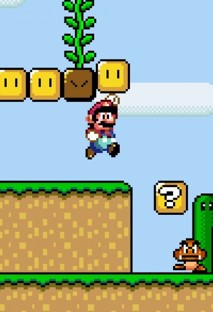
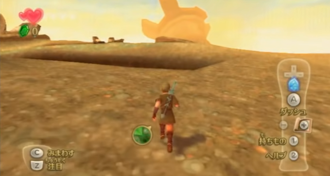
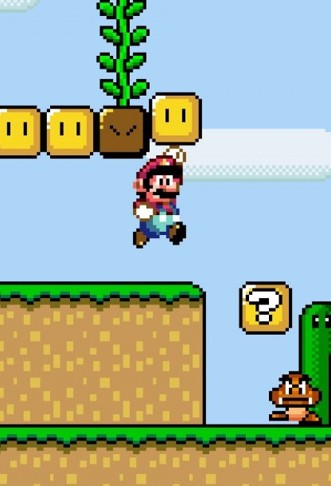
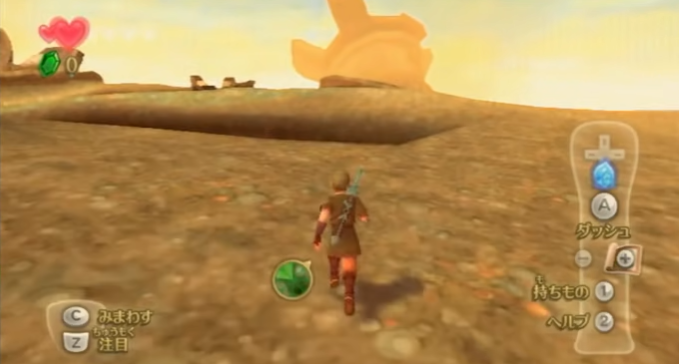
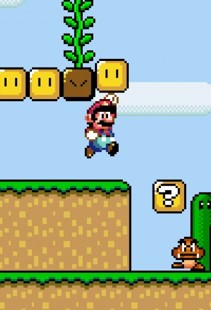
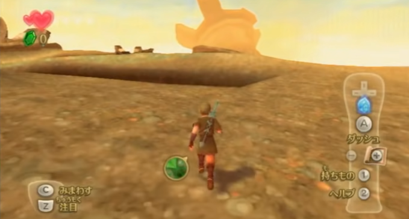
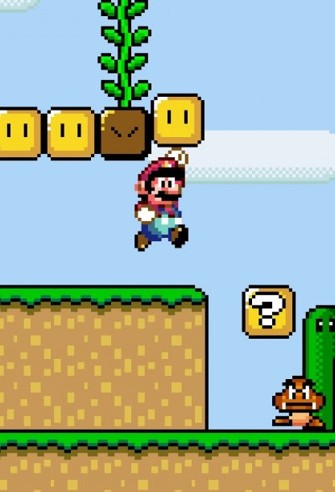
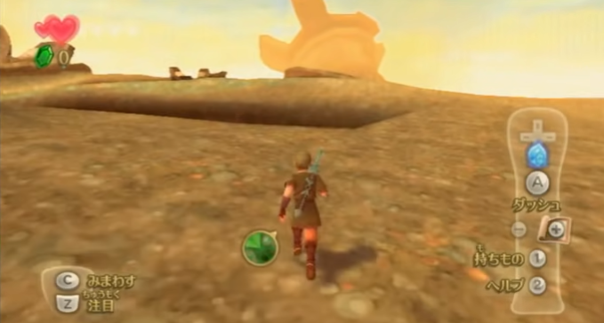

The act of “speedrunning” has grown significantly in the past couple of years. As it stands, many people who don't play video games are often confused when they hear the term speedrunning.
On the surface level, speedrunning can be defined as beating a game as fast as possible. A speedrunner will continually race against their own personal "runs" to get the lowest time possible. While these runs cover the majority of speedruns, there's also a subset of categories (or different "runs") that require different strategies or techniques on top of the overall objective of getting a faster time.
Speedrunning can be fully defined as such:
Speedrunning is a playthrough of a video game with the intention of completing it as quickly as possible using whatever means necessary while also adhering to a set of rules established by the game's speedrunning community. There exist multiple different categories, with the most popular being Any%, 100%, and glitchless categories.
There are different rules for each of these categories, but the most popular category is the Any% category.
The any percent category enables speedrunners to take advantage of a video game's glitches and bugs to beat the game as quickly as possible. If you've ever played a video game and seen one of these glitches firsthand, you can expect a speedrunner to be incorporating them into their runs, even if it saves less then a second. Besides external cheating and modifying controllers, a speedrunner is free to use whatever means necessary to get the lowest time. Strictly speaking, it's a raw test of consistency, technique, luck, knowledge, and ultimately hard work in order to get a time that a speedrunner is satisfied with.
Similar to Any%, the goal of 100% is to complete the game as quickly as possible, but there also comes a small twist. Runners must adhere to a specific list of requirements determined by the game's community to be a full “100%” completion of the game. For games such as Super Mario 64, this can be as easy as collecting all 120 stars coded into the game. For games in the Legend of Zelda series, notably The Windwaker, these can include all items, upgrades, heart containers, and songs, but can exclude obtaining a fully charted map and specific dungeon items. The reasoning behind this can be confusing, but ultimately comes down to the preferences of the community for simplicity sake.
This category requires runners to beat the game as fast as possible, but without the use of glitches. The purpose of this is to gauge how fast a game can be completed as intended. What is defined as a glitch is ultimately determined by the individual game's speedrun community, but these kinds of runs showcase the route that regular players would take, but at a much faster rate. These types of runs can be more enjoyable if you want to understand what is going on and see the tiny optimizations that speedrunners implement to be that much faster without the use of glitches.